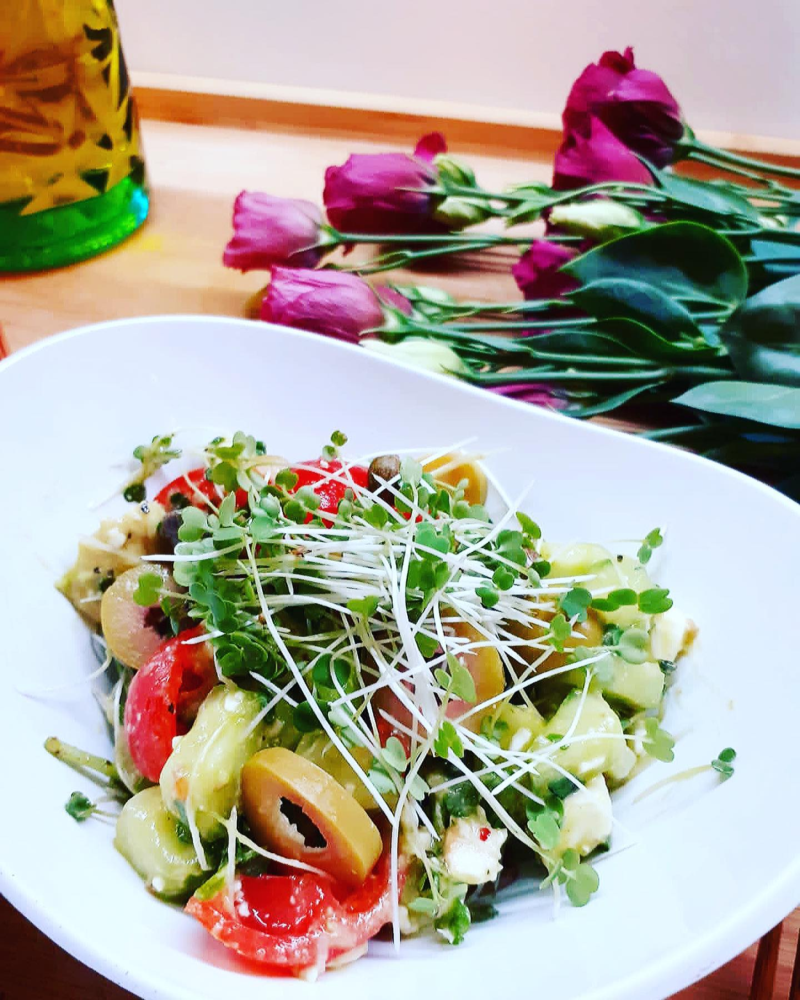

Grécky šalát podľa @microgreensrecipes.sk — Normy Jedál
Grecky🫒 🍅🥒salat 🥗s @microgreens.slovakia rucolou🪴 a 🥑 .
Ingrediencie :
1 uhorka 🥒
Balenie cherry paradajok 🍅
Olivy 🫒
Balkansky syr
Avokado 🥑
Olivovy olej 🫒
4 druhy farebneho koreni
Oregano
Limetkova stava
Micro rucola 🪴
Vsetko nakrajame na mensie kocky a premiesame 🥗. Dobru chut 🌷. #microgreensalad #microgreens #mikrozelenina #rucola #greckysalat #podlamojejchuti #vegetarian #recept #zdraverecepty #dinner #vecera #budfit #foodbloger #bloger #foto